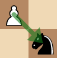

Causal Chess is a indie game that I'm develoing in my spare time. Casual Chess is similar to regular chess but with a twist.
This game is in very early development and things are likely to change.
Casual Chess is just like normal chess for the first 10 rounds. But after every 10 rounds, both players enter the shop. Each player starts with 10 gold but since black goes second, they receive a coin to balance the game.
In the shop, players are able to buy upgrades that help them during the game. For example, one of the upgrades allows your pawns to capture diagonally back like this:
